Dlouholeté zkušenosti
OKO působí na trhu od roku 1996. Kombinujeme tradici s moderními technologiemi.
Ing. Vojtěch Jíra
Chráníme to, na čem vám záleží, již od roku 1996. Jsme experti na montáž špičkových zabezpečovacích a kamerových systémů s tradicí, která zavazuje. Aby byla vaše ochrana kompletní, od roku 2005 zajišťujeme také nepřetržité střežení objektů prostřednictvím vlastního pultu centrální ochrany (PCO). Spojte moderní technologie s desítkami let našich zkušeností.

OKO působí na trhu od roku 1996. Kombinujeme tradici s moderními technologiemi.
Od technického zabezpečení přes montáže až po fyzickou ochranu. Vše z jedné ruky, sjednocený přístup a koordinace.
Působíme v regionu Chrudim a okolí. Rychlá dostupnost, osobní přístup a znalost místních podmínek.
Prověření pracovníci s potřebnými licencemi a certifikáty. Pravidelná školení a dodržování nejvyšších standardů.
Komplexní dodávky, montáže a servis elektrických zabezpečovacích signalizací. Používáme pouze zařízení s platnými atesty a homologacemi, která jsou úspěšně provozována i v náročných podmínkách včetně nasazení v armádě či u policie.
Dodávky, montáže a servis kamerových systémů CCTV. Komplexní řešení od návrhu přes instalaci až po údržbu. Moderní IP i analogové systémy s možností vzdáleného přístupu.
Dodávky, montáže a servis elektrických požárních signalizací. Systémy splňující nejvyšší bezpečnostní standardy s platnými atesty a homologacemi.
Komplexní řešení docházkových a přístupových systémů. Od jednoduchých čteček karet až po pokročilé biometrické systémy s integrací do stávající infrastruktury.
Dodávky a montáže datových rozvodů pro firmy i rodinné domy. Budujeme spolehlivé počítačové sítě a strukturovanou kabeláž pro přenos dat i hlasových služeb.
Pro vzdálenou podporu můžete použít TeamViewer .
Návod k instalaci aplikace HIK CONNECT pro kamerový systém v režimu CLOUD.
Návod k instalaci aplikace HIK CONNECT pro kamerový systém s veřejnou IP adresou.
Níže najdete aktuální příležitosti - pro více informací kontaktujte uvedenou osobu.
Hledáme montážního technika pro instalace slaboproudých systémů-kamerové, zabezpečovací, datové, který se nebojí manuální práce. Práce v menším týmu. Nejedná se o práci na směny.
Spolehlivost, zodpovědný přístup k práci a ochotu učit se novým věcem. Řidičský průkaz sk.B. Praxi v oboru elektro (není podmínkou). Stačí mít vztah k elektru a zbytek naučíme. Vyhláška 50 není podmínkou. Bezúhonnost.
Ing. Vojtěch Jíra
603 465 031 · jira@bos-pco.cz
Máme potřebné licence a certifikáty pro práci se zabezpečovacími systémy. Prohlédněte si je v galerii níže.
Firmy, které dlouhodobě využívají služby BOS-PCO.
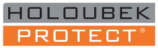
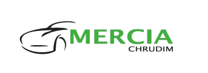
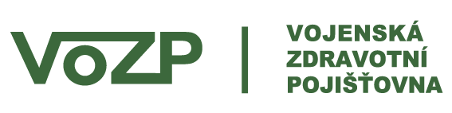
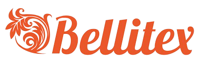
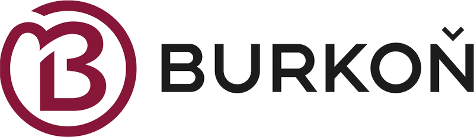
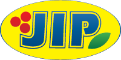
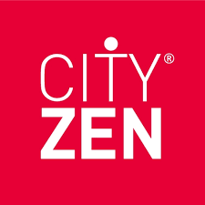
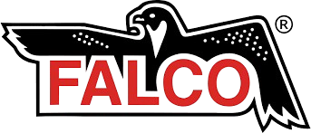
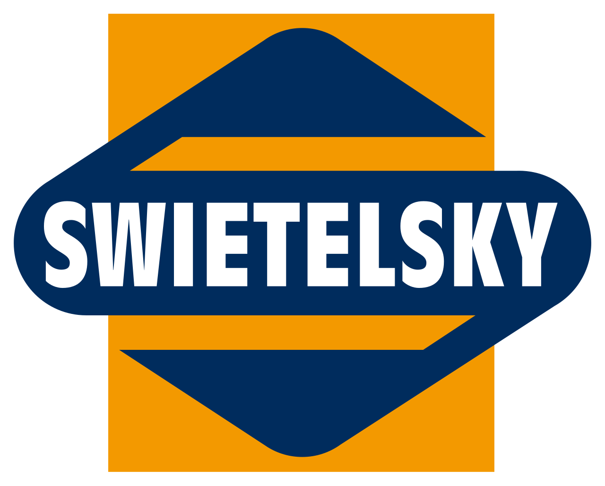


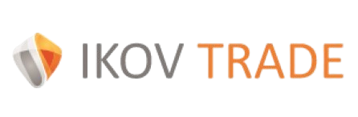
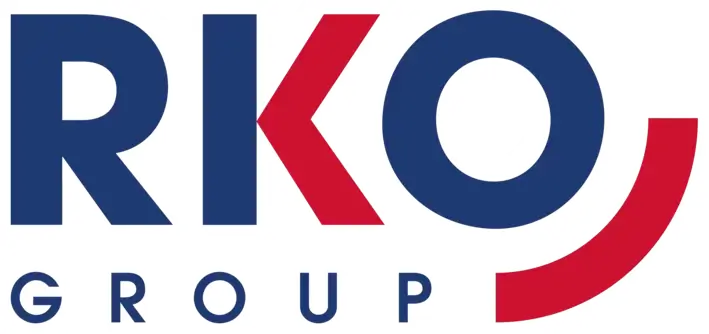
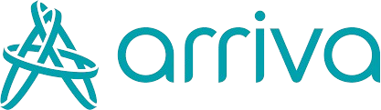


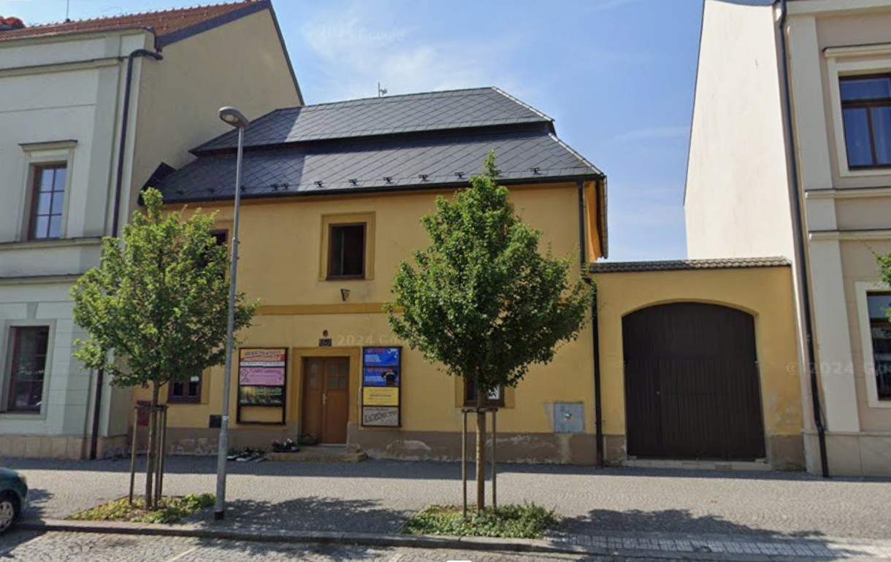
Ing. Vojtěch Jíra
Náměstí čp. 6
538 51 Chrast u Chrudimi
Telefon: +420 469 666 854
Email: jira@bos-pco.cz